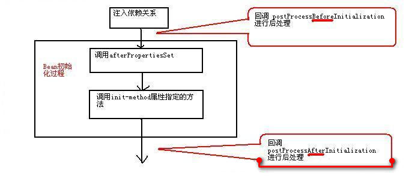

Springの概要
SpringフレームワークはRod Johnsonによって開発され、2004年にSpringフレームワークの最初のバージョンがリリースされました。Springは実際の開発から抽出されたフレームワークであり、開発における多くの一般的な手順を代行するため、開発者に残されるのは特定のアプリケーションに関連する部分だけです。これにより、エンタープライズアプリケーションの開発効率が大幅に向上します。
Springの利点をまとめると次のとおりです。
- 低侵入型設計であり、コードへの汚染が極めて低い。
- 各種アプリケーションサーバーから独立しており、Springフレームワークに基づくアプリケーションは「Write Once, Run Anywhere」の約束を真に実現できます。
- SpringのIoCコンテナはビジネスオブジェクトの置き換えの複雑さを軽減し、コンポーネント間の疎結合性を高めます。
- SpringのAOPサポートにより、セキュリティ、トランザクション、ログなどの一般的なタスクを集中管理でき、より良い再利用性を提供します。
- SpringのORMとDAOは、サードパーティの永続層フレームワークとの良好な統合を提供し、基盤となるデータベースアクセスを簡素化します。
- Springは高度な開放性を備えており、アプリケーションにSpringへの完全な依存を強制しません。開発者はSpringフレームワークの一部または全部を自由に選択できます。
Springフレームワークの構成図は次のとおりです。

Springの中核メカニズム
Beanの管理
プログラムは主にSpringコンテナを介してコンテナ内のBeanにアクセスします。ApplicationContextはSpringコンテナで最も一般的に使用されるインターフェースであり、このインターフェースには次の2つの実装クラスがあります。
- ClassPathXmlApplicationContext: クラスロードパスから設定ファイルを検索し、設定ファイルに基づいてSpringコンテナを作成します。
- FileSystemXmlApplicationContext: ファイルシステムの相対パスまたは絶対パスから設定ファイルを検索し、設定ファイルに基づいてSpringコンテナを作成します。
public class BeanTest{
public static void main(String args[]) throws Exception{
ApplicationContext ctx = new ClassPathXmlApplicationContext("beans.xml");
Person p = ctx.getBean("person", Person.class);
p.say();
}
}
EclipseでのSpringの使用
EclipseなどのIDEツールでは、ユーザーは（ユーザーライブラリを）自ら作成できUser Library、その後SpringのJarパッケージをすべてその中に配置します。もちろん、Jarパッケージをプロジェクトの/WEB-INF/libディレクトリ配下に直接配置することもできます。ただし、ユーザーライブラリを使用する場合はUser Library、プロジェクト公開時に、ユーザーライブラリが参照するJarファイルをアプリケーションとともに公開する必要があります。つまり、User Libraryが使用するJarを/WEB-INF/libディレクトリ配下にコピーする必要があります。これは、Webアプリケーションの場合、EclipseがWebアプリケーションをデプロイする際、ユーザーライブラリのJarファイルを/WEB-INF/lib配下にコピーしないため、手動でコピーする必要があります。
依存性注入
Springフレームワークの中核機能は2つあります。
- Springコンテナはスーパー工場として、すべてのJavaオブジェクトの作成と管理を担います。これらのJavaオブジェクトはBeanと呼ばれます。
- Springコンテナはコンテナ内のBean間の依存関係を管理します。Springは「依存性注入」と呼ばれる方法でBean間の依存関係を管理します。
依存性注入を使用すると、Beanに通常の属性値を注入するだけでなく、他のBeanの参照を注入することもできます。依存性注入は優れた疎結合化の方法であり、Beanをハードコーディングで結合するのではなく、設定ファイルによって組織化することができます。
依存性注入の理解
Rod Johnsonは、設定ファイルを使用してJavaインスタンスの協調関係を管理することを最初に重視した人物であり、この方法に「制御の反転（Inverse of Control、IoC）」という名前を付けました。後にMartine Fowlerがこの方法に「依存性注入（Dependency Injection）」という別の名前を付けました。したがって、依存性注入であろうと制御の反転であろうと、その意味はまったく同じです。あるJavaオブジェクト（呼び出し側）が別のJavaオブジェクト（被依存オブジェクト）のメソッドを呼び出す必要がある場合、従来のモデルでは通常2つの方法があります。
- 従来の方法: 呼び出し側は積極的に被依存オブジェクトを作成し、その後被依存オブジェクトのメソッドを呼び出します。
- 単純ファクトリパターン: 呼び出し側はまず被依存オブジェクトのファクトリを見つけ、次に積極的にファクトリを介して被依存オブジェクトを取得し、最後に被依存オブジェクトのメソッドを呼び出します。
上記の「主动」という2文字に注意してください。これにより、呼び出し側と被依存オブジェクトの実装クラスとのハードコーディング結合が必然的に発生し、プロジェクトのアップグレードや保守に非常に不利になります。Springフレームワークを使用した後、呼び出し側は能動的に被依存オブジェクトを取得する必要はありません。呼び出し側はただ受動的にSpringコンテナが呼び出し側のメンバー変数に代入するのを受け入れるだけでよいのです。これからわかるように、Springを使用すると、呼び出し側が被依存オブジェクトを取得する方法は、従来の能動的な取得から受動的な受け入れに変わります。そのため、Rod Johnsonはこれを制御の反転と呼んだのです。
また、Springコンテナの観点から見ると、Springコンテナは被依存オブジェクトを呼び出し側のメンバー変数に代入する役割を担います。これは、呼び出し側が依存するインスタンスを注入することに相当するため、Martine Fowlerはこれを依存性注入と呼びました。
セッター注入
セッター注入とは、IoCコンテナがメンバー変数のsetterメソッドを介して被依存オブジェクトを注入する方法です。この注入方法はシンプルで直感的なため、Springの依存性注入で広く使用されています。
コンストラクタ注入
コンストラクタを使用して依存関係を設定する方法は、コンストラクタ注入と呼ばれます。平たく言えば、Springが内部でリフレクションを用いて指定されたパラメータを持つコンストラクタを実行し、パラメータ付きコンストラクタを実行する際に、コンストラクタのパラメータでメンバー変数を初期化することを可能にします。これがコンストラクタ注入の本質です。
2つの注入方法の比較
セッター注入には次の利点があります。
- 従来のJavaBeanの書き方により近く、プログラマにとって理解しやすく受け入れやすいものです。setterメソッドで依存関係を設定する方が、より直感的で自然です。
- 複雑な依存関係の場合、コンストラクタ注入を採用するとコンストラクタが過度に肥大化し、読みにくくなります。SpringがBeanインスタンスを作成する際、依存するすべてのインスタンスも同時にインスタンス化する必要があるため、パフォーマンスが低下します。セッター注入を使用すれば、これらの問題を回避できます。
- 特に一部のメンバー変数がオプションである場合、多数のパラメータを持つコンストラクタはさらに扱いにくくなります。
コンストラクタ注入の利点は次のとおりです。
- コンストラクタ注入では、コンストラクタ内で依存関係の注入順序を決定でき、優先度の高い依存関係を優先的に注入できます。
- 依存関係が変化する必要のないBeanには、コンストラクタ注入がより有効です。setterメソッドがないため、すべての依存関係はコンストラクタ内で設定され、後続のコードが依存関係を壊す心配がありません。
- 依存関係がコンストラクタ内でのみ設定される場合、コンポーネントの作成者のみがコンポーネントの依存関係を変更できます。コンポーネントの呼び出し側にとって、コンポーネント内部の依存関係は完全に透過的であり、高凝集の原則により適合します。
注意：
セッター注入を主とし、コンストラクタ注入を副とする注入戦略を推奨します。依存関係が変化する必要のない注入には、可能な限りコンストラクタ注入を採用し、その他の依存関係の注入にはセッター注入を検討してください。
Springコンテナ内のBean
開発者にとって、Springフレームワークを使用する主な作業は2つあります：①Beanの開発、②Beanの設定です。Springフレームワークにとって、やることは設定ファイルに基づいてBeanインスタンスを作成し、Beanインスタンスのメソッドを呼び出して「依存性注入」を完了することです。これがいわゆるIoCの本質です。
コンテナ内のBeanのスコープ
Springコンテナを介してBeanインスタンスを作成する場合、Beanインスタンスのインスタンス化を完了するだけでなく、Beanに特定のスコープを指定することもできます。Springは次の5つのスコープをサポートしています。
- singleton: シングルトンモード。Spring IoCコンテナ全体において、singletonスコープのBeanは1つのインスタンスのみ生成されます。
- prototype: コンテナのgetBean()メソッドを介してprototypeスコープのBeanを取得するたびに、新しいBeanインスタンスが生成される。
- request: 1回のHTTPリクエストに対して、requestスコープのBeanは1つのインスタンスのみ生成される。つまり、同じHTTPリクエスト内でプログラムがこのBeanを要求するたびに、常に同じインスタンスを取得する。SpringをWebアプリケーションで使用する場合にのみ、このスコープは実際に有効となる。
- session: このスコープはBeanの定義をHTTPセッションに限定する。web対応のSpring ApplicationContextのコンテキストでのみ有効である。
- global session: 各グローバルHTTPセッションに対して1つのBeanインスタンスが対応する。典型的には、portletコンテキストを使用する場合にのみ有効であり、やはりWebアプリケーションでのみ有効である。
Beanのスコープを指定しない場合、Springはデフォルトでsingletonスコープを使用する。prototypeスコープのBeanは生成と破棄のコストが比較的高い。一方、singletonスコープのBeanインスタンスは一度生成されると再利用できる。したがって、Beanをprototypeスコープに設定することはできるだけ避けるべきである。
自動配線を使用して協力者Beanを注入する
SpringはBean間の依存関係を自動配線できる。つまり、refを使用して依存Beanを明示的に指定する必要がなく、SpringコンテナがXML設定ファイルの内容を検査し、何らかの規則に基づいて、呼び出し側Beanに依存先Beanを注入する。
Springの自動配線は、<beans/>要素のdefault-autowire属性で指定できる。この属性は設定ファイル内のすべてのBeanに影響を与える。また、<bean/>要素のautowire属性で指定できる。この属性はそのBeanにのみ影響を与える。
autowireとdefault-autowire次の値を受け入れることができる：
no: 自動配線を使用しない。Beanの依存関係はref要素で定義しなければならない。これはデフォルト設定であり、大規模なデプロイ環境ではこの設定を変更することは推奨されない。協力者を明示的に設定することで、より明確な依存関係が得られる。byName: setterメソッド名に基づいて自動配線する。Springコンテナはコンテナ内のすべてのBeanを検索し、そのidがsetterメソッド名からsetプレフィックスを除き、先頭文字を小文字にしたものと同名のBeanを見つけて注入を完了する。一致するBeanインスタンスが見つからない場合、Springは一切注入を行わない。byType: setterメソッドの仮引数型に基づいて自動配線する。Springコンテナはコンテナ内のすべてのBeanを検索し、setterメソッドの仮引数型と一致するBean型がちょうど1つあれば、そのBeanを自動的に注入する。そのようなBeanが複数見つかった場合は例外をスローする。そのようなBeanが見つからない場合は何も起こらず、setterメソッドは呼び出されない。constructorbyTypeと似ているが、コンストラクタの引数を自動的に一致させるために使用される点が異なる。コンテナがコンストラクタの引数型と一致するBeanをちょうど1つ見つけられない場合、例外をスローする。autodetect: SpringコンテナはBeanの内部構造に基づいて、constructorまたはbyTypeの戦略を使用するかを自ら決定する。デフォルトのコンストラクタが見つかった場合、byType戦略が適用される。
あるBeanが自動配線による依存関係とrefによる明示的な依存関係の両方を使用する場合、明示的に指定された依存関係が自動配線の依存関係を上書きする。大規模なアプリケーションでは、自動配線の使用は推奨されない。自動配線を使用すると設定ファイルの作業量を減らせるが、依存関係の明確性と透明性が大幅に低下する。依存関係の配線はソースファイルのプロパティ名とプロパティ型に依存するため、Bean間の結合がコードレベルにまで低下し、高レベルの疎結合には不利である。
<!--通过设置可以将Bean排除在自动装配之外--> <bean id="" autowire-candidate="false"/> <!--除此之外，还可以在beans元素中指定，支持模式字符串，如下所有以abc结尾的Bean都被排除在自动装配之外--> <beans default-autowire-candidates="*abc"/>
Beanを作成する3つの方法
コンストラクタを使用してBeanインスタンスを作成する
コンストラクタを使用してBeanインスタンスを作成するのが最も一般的なケースである。コンストラクタ注入を採用しない場合、Springの内部はBeanクラスの引数なしコンストラクタを呼び出してインスタンスを作成するため、そのBeanクラスは引数なしコンストラクタを提供する必要がある。
デフォルトのコンストラクタでBeanインスタンスを作成すると、SpringはBeanインスタンスのすべてのプロパティに対してデフォルト初期化を実行する。つまり、すべての基本型の値は0またはfalseに初期化され、すべての参照型の値はnullに初期化される。
静的ファクトリメソッドを使用してBeanを作成する
静的ファクトリメソッドを使用してBeanインスタンスを作成する場合、class属性も指定する必要がある。ただし、このときのclass属性はBeanインスタンスの実装クラスを指定するのではなく、静的ファクトリクラスを指定する。Springはこの属性を通じて、どのファクトリクラスがBeanインスタンスを作成するかを知る。
これに加えて、factory-method属性を使用して静的ファクトリメソッドを指定する必要がある。Springは静的ファクトリメソッドを呼び出してBeanインスタンスを返す。指定されたBeanインスタンスを取得すると、その後のSpringの処理手順は通常の方法でBeanインスタンスを作成する場合と完全に同じである。静的ファクトリメソッドがパラメータを必要とする場合は、<constructor-arg.../>要素を使用して静的ファクトリメソッドのパラメータを指定する。
インスタンスファクトリメソッドを呼び出してBeanを作成する
インスタンスファクトリメソッドと静的ファクトリメソッドの違いは1つだけである。静的ファクトリメソッドの呼び出しはファクトリクラスを使用するだけでよいが、インスタンスファクトリメソッドの呼び出しにはファクトリインスタンスが必要である。インスタンスファクトリメソッドを使用する場合、Beanインスタンスを設定する<bean.../>要素はclass属性を必要としない。インスタンスファクトリメソッドの設定にはfactory-beanを使用してファクトリインスタンスを指定する。
インスタンスファクトリメソッドを使用してBeanを作成する<bean.../>要素では、次の2つの属性を指定する必要がある：
- factory-bean: この属性の値はファクトリBeanのidである。
- factory-method: この属性はインスタンスファクトリのファクトリメソッドを指定する。
インスタンスファクトリメソッドを呼び出すときにパラメータを渡す必要がある場合は、<constructor-arg.../>要素を使用してパラメータ値を指定する。
スコープが同期していないBeanの調整
singletonスコープのBeanがprototypeスコープのBeanに依存する場合、同期しない現象が発生する。その理由は、Springコンテナが初期化されるとき、コンテナがコンテナ内のすべてのsingleton Bean、なぜならsingleton Beanに依存しているprototype Bean、したがってSpringは初期化する際にsingleton Beanの前に、まず作成するprototypeBean——その後ようやく作成するsingleton Bean、次にprototype Bean注入するsingleton Bean。
同期しない問題を解決する方法は2つある：
- 依存性注入をやめる: singletonスコープのBeanがprototypeスコープのBeanを必要とするたびに、能動的にコンテナに新しいBeanインスタンスを要求すれば、毎回注入される
prototype Beanインスタンスが常に最新のインスタンスであることを保証できる。 - メソッド注入を利用する: メソッド注入は通常lookupメソッド注入を使用する。lookupメソッド注入を使用すると、Springコンテナがコンテナ内のBeanの抽象メソッドまたは具象メソッドを書き換え、コンテナ内の他のBeanを検索した結果を返すことができる。検索されるBeanは通常、
non-singleton Beanである。SpringはJDK動的プロキシまたはcglibライブラリを使用してクライアントのバイナリコードを変更し、上記の要件を実現する。
2つ目の方法、メソッド注入を採用することを推奨する。lookupメソッド注入を使用するには、おおよそ次の2つの手順が必要である：
- 呼び出し側Beanの実装クラスを抽象クラスとして定義し、依存先Beanを取得するための抽象メソッドを1つ定義する。
- に
<bean.../>要素に<lookup-method.../>子要素を追加して、Springに呼び出し側Beanの実装クラスで指定された抽象メソッドを実装させる。
注意：
Springは実行時に動的拡張を行う方法で、
<lookup-method.../>要素で指定された抽象メソッドを実装する。対象の抽象クラスがインターフェースを実装したことがある場合、SpringはJDK動的プロキシを使用してその抽象クラスを実装し、抽象メソッドを実装する。対象の抽象クラスがインターフェースを実装したことがない場合、Springはcglibを使用してその抽象クラスを実装し、抽象メソッドを実装する。Spring4.0のspring-core-xxx.jarパッケージにはcglibライブラリがすでに統合されている。
2種類の後処理プロセッサ
Springは2つの一般的な後処理プロセッサを提供する：
- Bean後処理プロセッサ: この後処理プロセッサはコンテナ内のBeanを後処理し、Beanをさらに強化する。
- コンテナ後処理プロセッサ: この後処理プロセッサはIoCコンテナを後処理し、コンテナの機能を強化するために使用される。
Bean後処理プロセッサ
Bean後処理プロセッサは特別なBeanであり、この特別なBeanは外部にサービスを提供しない。id属性さえも必要としない場合がある。主にコンテナ内の他のBeanに対して後処理を実行する責任があり、例えばコンテナ内の対象Beanのプロキシを生成するなどである。このようなBeanはBean後処理プロセッサと呼ばれる。Bean後処理プロセッサは、Beanインスタンスの作成が成功した後、Beanインスタンスに対してさらなる拡張処理を行う。Bean後処理プロセッサはBeanPostProcessorインターフェースを実装しなければならず、同時にそのインターフェースの2つのメソッドを実装する必要がある。
Object postProcessBeforeInitialization(Object bean, String name) throws BeansException: このメソッドの最初のパラメータはシステムがこれから後処理を行うBeanインスタンスであり、2番目のパラメータはそのBeanの設定idである。Object postProcessAfterinitialization(Object bean, String name) throws BeansException: このメソッドの最初のパラメータはシステムがこれから後処理を行うBeanインスタンスであり、2番目のパラメータはそのBeanの設定idである。
コンテナ内にBean後処理プロセッサが登録されると、Bean後処理プロセッサは自動的に起動し、コンテナ内の各Bean作成時に自動的に動作する。Bean後処理プロセッサの2つのメソッドのコールバックタイミングは次の図のとおりである：

1点注意すること。もしBeanFactoryをSpringコンテナとして使用する場合、Bean後処理プロセッサを手動で登録する必要がある。プログラムはBean後処理プロセッサインスタンスを取得し、手動で登録しなければならない。
BeanPostProcessor bp = (BeanPostProcessor)beanFactory.getBean("bp");
beanFactory.addBeanPostProcessor(bp);
Person p = (Person)beanFactory.getBean("person");
コンテナ後処理プロセッサ
コンテナ後処理プロセッサは必ず実装しなければならないBeanFactoryPostProcessorインターフェースであり、そのインターフェースの1つのメソッドを実装しますpostProcessBeanFactory(ConfigurableListableBeanFactory beanFactory)このメソッドを実装するメソッド本体は、Springコンテナに対する処理です。この処理により、Springコンテナをカスタム拡張できます。もちろん、Springコンテナに対して何も処理を行わないこともできます。
に類似しているBeanPostProcessor，ApplicationContextコンテナ内のコンテナ後処理プロセッサを自動的に検出し、コンテナ後処理プロセッサを自動登録できます。ただし、BeanFactorySpringコンテナとして使用する場合は、このコンテナ後処理プロセッサを手動で呼び出して処理するBeanFactoryコンテナ。
Springの「ゼロ設定」サポート
Beanクラスの検索
Springは以下のいくつかのAnnotationを提供して、Spring Beanをマークします：
@Component: 通常のSpring Beanクラスをマークします@Controller: コントローラーコンポーネントクラスをマークします@Service: ビジネスロジックコンポーネントクラスをマークします@Repository: DAOコンポーネントクラスをマークします
Spring設定ファイルで次のように設定し、自動スキャンするパッケージを指定します：
<context:component-scan base-package="edu.shu.spring.domain"/>
@Resourceを使用した依存性の設定
@Resource位置はjavax.annotationパッケージ配下にあり、JavaEE仕様に由来する1つのAnnotation、Springはこのアノテーションを直接参考にしましたAnnotation、このアノテーションを使用することでAnnotationターゲットBeanに協作者Beanを指定します。使用@Resourceと<property.../>要素のref属性と同じ効果があります。
@Resourcesetterメソッドを修飾できるだけでなく、インスタンス変数を直接修飾することもできます。使用する場合@Resourceインスタンス変数を修飾するとより簡単になります。この場合、SpringはJavaEE仕様のField注入を直接使用するため、setterメソッドさえ不要になります。
@PostConstructと@PreDestroyを使用したライフサイクル動作のカスタマイズ
@PostConstructと@PreDestroy同じくjavax.annotationパッケージ配下にあり、JavaEE仕様に由来する2つのAnnotationです。Springはこれらを直接参考にし、Springコンテナ内のBeanのライフサイクル動作をカスタマイズするために使用します。どちらもメソッドを修飾するために使用され、属性は不要です。前者が修飾するメソッドはBeanの初期化メソッドであり、後者が修飾するメソッドはBean破棄前のメソッドです。
Spring4.0で強化された自動配線と正確な配線
Springは@Autowired自動配線を指定するためのアノテーションを提供します。@Autowiredsetterメソッド、通常のメソッド、インスタンス変数、コンストラクタなどを修飾できます。使用する場合@Autowiredsetterメソッドをマークする場合、デフォルトでbyType自動配線戦略が採用されます。この戦略では、自動配線タイプに一致する候補Beanインスタンスが複数存在することがよくあり、この場合に例外が発生する可能性があります。精密な自動配線を実現するために、Springは@Qualifierアノテーションを提供しており、これを使用することで@Qualifier、Beanのidに基づいて自動配線を実行できます。
SpringのAOP
なぜAOPが必要なのか
AOP（Aspect Orient Programming）つまりアスペクト指向プログラミングであり、オブジェクト指向プログラミングの補完として、すでに比較的成熟したプログラミング方式になっています。実際、AOPが登場してからの時間はそれほど長くありません。AOPとOOPは相互に補完し合い、アスペクト指向プログラミングはプログラムの実行プロセスを各アスペクトに分解します。
AOPは、システム内の各モジュール（異なるメソッド）に分散する横断的関心事の問題を処理するために特化しています。JavaEEアプリケーションでは、トランザクション管理、セキュリティチェック、キャッシュ、オブジェクトプール管理など、横断的な性質を持つシステムレベルのサービスを処理するためにAOPがよく使用されます。AOPは非常に一般的なソリューションになっています。
AspectJを使用したAOPの実装
AspectJはJava言語ベースのAOPフレームワークであり、強力なAOP機能を提供します。他の多くのAOPフレームワークがその思想の一部を参考にしたり採用したりしています。主に2つの部分から構成されます：1つ目の部分は、AOPプログラミングにおける構文仕様の表現方法と定義方法を定めており、この構文仕様を通じて、Java言語に存在する横断的関心事の問題をAOPで簡単に解決できます。もう1つの部分はツール部分であり、コンパイルツールやデバッグツールなどが含まれます。
AOP実装は2つの種類に分類できます：
- 静的AOP実装：AOPフレームワークはコンパイル段階でプログラムを変更し、ターゲットクラスの拡張を実現して、静的なAOPプロキシクラスを生成します。AspectJが代表です。
- 動的AOP実装：AOPフレームワークは実行段階でAOPプロキシを動的に生成し、ターゲットオブジェクトの拡張を実現します。Spring AOPが代表です。
一般的に、静的AOP実装は良好なパフォーマンスを持ちますが、特別なコンパイラを使用する必要があります。動的AOP実装は純粋なJava実装であるため、特別なコンパイラは不要ですが、通常はパフォーマンスがやや劣ります。
AOPの基本概念
アスペクト指向プログラミングに関するいくつかの用語：
- アスペクト（Aspect）：アスペクトは複数のAdviceを組織化するために使用され、Adviceはアスペクト内で定義されます。
- ジョインポイント（Joinpoint）：プログラム実行中の明確なポイントであり、メソッドの呼び出しや例外のスローなどです。Spring AOPでは、ジョインポイントは常にメソッドの呼び出しです。
- 拡張処理（Advice）：AOPフレームワークが特定のポイントカットで実行する拡張処理です。処理には"around"、"before"、"after"などのタイプがあります。
- ポイントカット（Pointcut）：拡張処理を挿入できるジョインポイントです。簡単に言うと、あるジョインポイントが指定された要件を満たすとき、そのジョインポイントに拡張処理が追加され、そのジョインポイントはポイントカットになります。
SpringのAOPサポート
SpringのAOPプロキシはSpringのIoCコンテナが生成・管理し、その依存関係もIoCコンテナが管理します。
アプリケーションで@AspectJサポートを使用するには、Springは3つのライブラリを追加する必要があります：
aspectjweaver.jaraspectjrt.jaraopalliance.jar
そして、Spring設定ファイルで次のように設定します：
<!--启动@AspectJ支持-->
<aop:aspectj-autoproxy/>
<!--指定自动搜索Bean组件、自动搜索切面类-->
<context:component-scan base-package="edu.shu.sprint.service">
<context:include-filter type="annotation" expression="org.aspectj.lang.annotation.Aspect"/>
</context:component-scan>
出典：http://codepub.cn/2015/06/21/Basic-knowledge-summary-of-Spring/